토목산업기사 (2016-05-08 기출문제)
1과목: 응용역학
1. 그림과 같은 원형 단주의 단면에서 핵(Core)의 반지름(e)은?
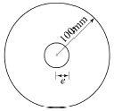
- 15mm
- 25mm
- 50mm
- 65mm
(정답률: 83%)

2. 그림과 같은 보에서 지점 A의 수직반력(VA)은?
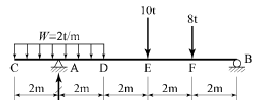
- 10tf(↑)
- 15tf(↑)
- 18tf(↑)
- 22tf(↑)
(정답률: 65%)
3. 다음 중 부정정구조물의 해법으로 적합하지 않은 것은?
- 3연 모멘트정리
- 변위일치법
- 처짐각법
- 모멘트면적법
(정답률: 60%)
4. 지름 D인 원형단면 보에 휨모멘트 M이 작용할 때이 보에 작용하는 최대 휨응력은?
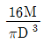
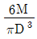
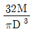
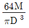
(정답률: 71%)
5. 재질, 단면적, 길이가 같은 장주에서 양단활절 기둥의 좌굴하중과 양단고정 기둥의 좌굴하중과의 비는?
- 1 : 16
- 1 : 8
- 1 : 4
- 1 : 2
(정답률: 73%)
6. 다음 그림과 같은 구조물에서 이 보의 단면이 받는 최대전단응력의 크기는?
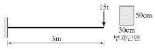
- 10kgf/cm2
- 15kgf/cm2
- 20kgf/cm2
- 25kgf/cm2
(정답률: 64%)
7. 단면상승모멘트의 단위로서 옳은 것은?
- cm
- cm2
- cm3
- cm4
(정답률: 55%)
8. 다음 그림과 같은 단순보의 중앙점의 휨모멘트는?
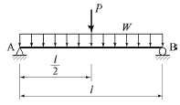
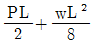
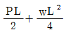
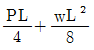
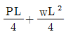
(정답률: 64%)
9. 지름 d=2cm 인 강봉을 P=10tf 의 축방향력으로 인장시킬때 봉의 횡방향 수축량은? (단, 푸아송비v=1/3, E=2×106kgf/cm2)
- 0.0006cm
- 0.0011cm
- 0.0071cm
- 0.0832cm
(정답률: 58%)
10. 그림과 같은 라멘에서 C점의 휨모멘트는?
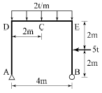
- -11tf∙m
- -14tf∙m
- -17tf∙m
- -20tf∙m
(정답률: 54%)
11. 그림과 같은 보에서 D점의 전단력은?
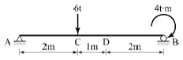
- +2.8tf
- -2.8tf
- 3.2tf
- -3.2tf
(정답률: 54%)
12. 전체길이 L인 단순보의 경간 중앙에 집중하중 P가수직으로 작용하는 경우 최대 처짐은? (단, EI일정하다.)
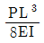
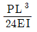
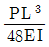
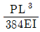
(정답률: 67%)
13. 그림과 같은 1차 부정정보의 부재 중에서 B지점을 제외한 휨모멘트가 0이 되는 곳은 A점에서 얼마 떨어진곳인가? (단, 자중은 무시한다.)
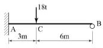
- 3m
- 2.50m
- 1.96m
- 1.50m
(정답률: 45%)
14. 그림과 같은 트러스에서 D1부재의 부재력은?
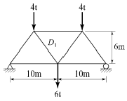
- 3.4tf (인장)
- 3.6tf (인장)
- 4.24tf (인장)
- 3.91tf (인장)
(정답률: 46%)
15. 지름 30cm인 단면의 보에 9tf의 전단력이 작용할때 이 단면에 일어나는 최대 전단응력은 약 얼마인가?
- 9kgf/cm2
- 12kgf/cm2
- 15kgf/cm2
- 17kgf/cm2
(정답률: 62%)
16. 축방향력 N, 단면적 A, 탄성계수 E일 때 축방향 변형에너지를 나타내는 식은?
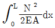
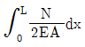
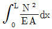
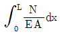
(정답률: 66%)
17. 다음 그림과 같은 역계에서 작용하중의 합력(R)의 위치 x값은?
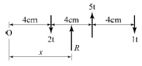
- 6cm
- 8cm
- 10cm
- 12cm
(정답률: 68%)
18. 그림과 같이 ABC의 중앙점에 10tf 의 하중을 달았을 때 정지하였다면 장력 T의 값은 몇 tf인가?
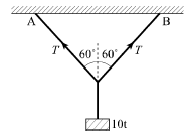
- 10
- 8.66
- 5
- 15
(정답률: 71%)
19. 그림과 같은 라멘(Rahmen)을 판별하면?
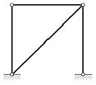
- 불안정
- 정정
- 1차 부정정
- 2차 부정정
(정답률: 66%)
20. 단면적 A인 도형의 중립축에 대한 단면2차모멘트를 IG라 하고 중립축에서 y만큼 떨어진 축에 대한 단면 2차모멘트를 I라 할 때 I로 옳은 것은?
- I=IG+A∙y2
- I=IG+A2∙y
- I=IG-A∙y2
- I=IG-A2∙y
(정답률: 70%)
2과목: 측량학
21. 레벨 측량에서 레벨을 세우는 횟수를 짝수로 하여 소거할 수 있는 오차는?
- 망원경의 시준축과 수준기축이 평행하지 않아 생기는 오차
- 표척의 눈금이 부정확하여 생기는 오차
- 표척의 이음매가 부정확하여 생기는 오차
- 표척의 0(zero) 눈금의 오차
(정답률: 53%)
22. 수위 관측소의 위치 선정 시 고려사항으로 옳지 않은 것은?
- 평시에는 홍수 때보다 수위표를 쉽게 읽을 수 있는 곳
- 지천의 합류점 및 분류점으로 수위의 변화가 뚜렷한 곳
- 하안과 하상이 안전하고 세굴이나 퇴적이 없는 곳
- 유속의 크기가 크지 않고 흐름이 직선인 곳
(정답률: 64%)
23. 동일 지점간 거리 관측을 3회, 5회, 7회 실시하여 최확값을 구하고자 할 때 각 관측값에 대한 보정값의 비(3회 : 5회 : 7회)로 옳은 것은?
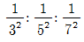
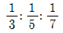
- 3:5:7
- 32:52:72
(정답률: 70%)
24. 다음 중 물리학적 측지학에 속하지 않는 것은?
- 지구의 극운동 자전운동
- 지구의 형상해석
- 하해 측량
- 지구조석측량
(정답률: 69%)
25. 그림과 같은 표고의 지형을 평탄하게 정지작업을 하였을 때 평균표고는?
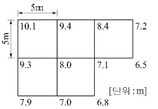
- 7.973m
- 8.000m
- 8.027m
- 8.104m
(정답률: 60%)
26. A점 좌표(XA=212.32m, YA=113.33m), B점 좌표(XB=313.38m, YB=12.27m), AP 방위각 TAP=80°일 때 ∠PAB(=θ)의 값은?
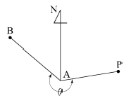
- 235°
- 325°
- 135°
- 115°
(정답률: 60%)
27. 삼각망 조정의 조건에 대한 설명으로 옳지 않은 것은?
- 1점 주위에 있는 각의 합은 180°이다.
- 검기선의 측정한 방위각과 계산된 방위각이 동일하다.
- 임의 한 변의 길이는 계산경로가 달라도 일치한다.
- 검기선은 측정한 길이와 계산된 길이가 동일하다.
(정답률: 61%)
28. 국토지리정보원에서 발행하는 1:50000지형도 1매에 포함되는 지역의 범위는?
- 위도10′, 경도10′
- 위도10′, 경도15′
- 위도15′, 경도10′
- 위도15′, 경도15′
(정답률: 65%)
29. 수평각을 관측하는 경우, 조정 불완전으로 인한 오차를 최소로 하기 위한 방법으로 가장 좋은 것은?
- 관측방법을 바꾸어 가면서 관측한다.
- 여러 번 반복 관측하여 평균값을 구한다.
- 정·반위관측을 실시하여 평균한다.
- 관측값을 수학적인 방법을 이용하여 조정한다.
(정답률: 46%)
30. 매개변수(A)가 90m인 클로소이드 곡선상의 시점에서 곡선길이(L)가 30m일 때 곡선의 반지름(R)은?
- 120m
- 150m
- 270m
- 300m
(정답률: 75%)
31. 축척 1:25000 지형도에서 5% 경사의 노선을 선정하려면 등고선(주곡선) 사이에 취해야 할 도상거리는?
- 8mm
- 12mm
- 16mm
- 20mm
(정답률: 33%)
32. 평판측량 방법 중 측량지역 내에 장애물이 없어 시준이 용이한 소지역에 주로 사용하는 방법으로 평판을 한 번 세워서 방향과 거리를 관측하여 여러 점들의 위치를 결정할 수 있는 방법은?
- 편각법
- 교회법
- 전진법
- 방사법
(정답률: 62%)
33. 촬영고도 700m에서 촬영한 사진 상에 굴뚝의 윗부분이 주점으로부터 72mm 떨어져 나타나있으며, 굴뚝의 변위가 6.98mm일 때 굴뚝의 높이는?
- 33.93m
- 36.10m
- 67.86m
- 72.20m
(정답률: 56%)
34. 도로의 단곡선 계산에서 노선기점으로부터 교점까지의 추가거리와 교각을 알고 있을 때 곡선시점의 위치를 구하기 위해서 계산되어야 하는 요소는?
- 접선장(T.L)
- 곡선장(C.L)
- 중앙종거(M)
- 접선에 대한 지거(Y)
(정답률: 65%)
35. 삼각점 표석에서 반석과 주석에 관한 내용 중 틀린 것은?
- 반석과 주석의 재질은 주로 금속을 이용한다.
- 반석과 주석의 십자선 중심은 동일 연직선상에 있다.
- 반석과 주석의 설치를 위해 인조점을 설치한다.
- 반석과 주석의 두부상면은 서로 수평이 되도록 설치한다.
(정답률: 66%)
36. 완화곡선설치에 관한 설명으로 옳지 않은 것은?
- 완화곡선의 반지름은 무한대로부터 시작하여 점차 감소되고 종점에서 원곡선의 반지름과 같게 된다.
- 완화곡선의 접선은 시점에서 직선에 접하고 종점에서 원호에 접한다.
- 완화곡선의 시점에서 캔트는 0이고 소요의 원곡선에 도달하면 어느 높이에 달한다.
- 완화곡선의 곡률은 곡선 전체에서 동일한 값으로 유지된다.
(정답률: 36%)
37. 곡선 설치에서 교각이 35°, 원곡선 반지름이 500m일 때 도로 기점으로부터 곡선 시점까지의 거리가 315.45m이면 도로 기점으로부터 곡선 종점까지의 거리는?
- 593.38m
- 596.88m
- 620.88m
- 625.36m
(정답률: 67%)
38. 그림과 같이 ΔABC의 토지를 한 변 BC에 평행한 DE 로 분할하여 면적의 비율이 ΔADE:□BCED=2:3이 되게 하려고 한다면 AD의 길이는? (단, AB의 길이는 50m)
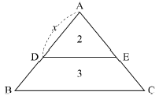
- 32.52m
- 31.62m
- 30m
- 20m
(정답률: 57%)
39. 지상고도 3,000m의 비행기 위에서 초점거리 150mm인 사진기로 촬영한 항공사진에서 길이가 30m인 교량의 길이는?
- 1.3mm
- 2.3mm
- 1.5mm
- 2.5mm
(정답률: 70%)
40. 교호수준 측량을 실시하여 다음의 결과를 얻었다. A점의 표고가 25.020m일 때 B점의 표고는? (단, a1=2.42m, a2=0.68m, b1=3.88m, b2=2.11m)
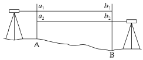
- 23.065m
- 23.575m
- 26.465m
- 26.975m
(정답률: 67%)
3과목: 수리학
41. 단면적이 200cm2인 90°굽어진 관(1/4 원의 형태)을 따라 유량 Q=0.⑤m3/s의 물이 흐르고 있다. 이 굽어진 면에 작용하는 힘(P)은? (단, 무게 1kg=9.8N)
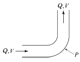
- 157N
- 177N
- 1570N
- 1770N
(정답률: 55%)
42. 수평으로부터 상향으로 60°를 이루고 20m/s로 사출되는 분수의 최대 연직 도달높이는? (단, 공기 및 기타의 저항은 무시함)
- 15.3m
- 17.2m
- 19.6m
- 21.4m
(정답률: 55%)
43. 관수로에 대한 설명으로 옳은 것은?
- 관내의 유체마찰력은 관 벽면에서 가장 크고 관 중심에서는 0이다.
- 관내의 유속은 관 벽으로부터 관 중심으로 1/3 떨어진 지점에서 최대가 된다.
- 유체마찰력의 크기는 관 중심으로부터의 거리에 반비례한다.
- 관의 최대유속은 평균유속의 3배이다.
(정답률: 46%)
44. 지하수에서 Darcy의 법칙이 실측값과 가장 잘 일치하는 경우의 지하수 흐름은?
- 난류
- 층류
- 사류
- 한계류
(정답률: 75%)
45. Bernoulli 정리의 적용 조건이 아닌 것은?
- Bernoulli 방정식이 적용되는 임의의 두 점은 같은 유선 상에 있다.
- 정상상태의 흐름이다.
- 압축성 유체의 흐름이다.
- 마찰이 없는 흐름이다.
(정답률: 52%)
46. 층류와 난류에 관한 설명으로 옳지 않은 것은?
- 층류 및 난류는 레이놀즈(Reynolds) 수의 크기로 구분할 수 있다.
- 층류란 직선상의 흐름으로 직각방향의 속도성분이 없는 흐름을 말한다.
- 층류인 경우는 유체의 점성계수가 흐름에 미치는 영향이 유체의 속도에 의한 영향보다 큰 흐름이다.
- 관수로에서 한계 레이놀즈 수의 값은 약 4000정도이고 이것은 속도의 차원이다.
(정답률: 57%)
47. 관의 길이가 80m, 관경 400mm인 주철관으로 0.1m3/s의 유량을 송수할 때 손실수두는? (단, Chezy의 평균 유속계수 C=70 이다.)
- 1.565m
- 0.129m
- 0.103m
- 0.092m
(정답률: 50%)
48. 부체가 안정되기 위한 조건으로 옳은 것은? (단, C=부심, G=중심, M=경심)
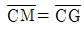
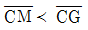
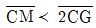
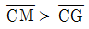
(정답률: 61%)
49. 두 개의 수조를 연결하는 길이 3.7m의 수평관속에 모래가 가득 차 있다. 두 수조의 수위차를 2.5m, 투수계수를 0.5m/s라고 하면 모래를 통과할 때의 평균 유속은?
- 0.104m/s
- 0.207m/s
- 0.338m/s
- 0.446m/s
(정답률: 52%)
50. 물의 성질에 관한 설명 중 틀린 것은?
- 물은 압축성을 가지며 온도, 압력 및 물에 포함되어 있는 공기의 양에 따라 다르다.
- 물의 단위중량이란 단위체적당 무게로 담수, 해수를 막론하고 항상 동일하다.
- 물의 밀도는 단위 체적당 질량으로 비질량(比質量)이라고도 한다.
- 물의 비중은 그 질량에 최대밀도가 생기게 하는 온도에서 그것과 같은 체적을 갖는 순수한 물의 질량과의 비이다.
(정답률: 65%)
51. 그림과 같이 높이 2m인 물통에 물이 1.5m만큼 담겨져 있다. 물통이 수평으로 4.9m/s2의 일정한 가속도를 받고 있을 때 물통의 물이 넘쳐흐르지 않기 위한 물통의 최소 길이는?
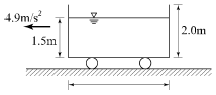
- 2.0m
- 2.4m
- 2.8m
- 3.0m
(정답률: 38%)
52. 삼각 위어의 유량공식으로 옳은 것은? (단, 위어의 각 : θ, 유량계수 : C, 월류 수심: H)
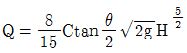
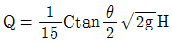
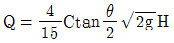
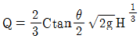
(정답률: 71%)
53. 등류의 정의로 옳은 것은?
- 흐름특성이 어느 단면에서나 같은 흐름
- 단면에 따라 유속 등의 흐름특성이 변하는 흐름
- 한 단면에 있어서 유적, 유속, 흐름의 방향이 시간에 따라 변하지 않는 흐름
- 한 단면에 있어서 유량이 시간에 따라 변하는 흐름
(정답률: 44%)
54. 어떠한 경우라도 전단응력 및 인장력이 발생하지 않으며 전혀 압축되지도 않고, 마찰저항 hL=0인 유체는?
- 소성유체
- 점성유체
- 탄성유체
- 완전유체
(정답률: 73%)
55. 직사각형단면 개수로의 수리상 유리한 형상의 단면에서 수로의 수심이 2m라면 이 수로의 경심(R)은?
- 0.5m
- 1m
- 2m
- 4m
(정답률: 58%)
56. 두 단면간의 거리가 1km, 손실수두가 5.5m, 관의 지름이 3m라고 하면 관 벽의 마찰력은? (단, 무게 1kg= 9.8N)
- 65.5N/m2
- 26.0N/m2
- 80.9N/m2
- 40.4N/m2
(정답률: 39%)
57. 수로의 취입구에 폭 3m의 수문이 있다. 문을 h 올린 결과, 그림과 같이 수심이 각각 5m와 2m가 되었다. 그 때 취수량이 8m3/s이었다고 하면 수문의 개방 높이 h는? (단, C=0.60)
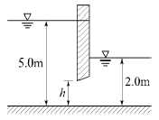
- 0.36m
- 0.58m
- 0.67m
- 0.73m
(정답률: 47%)
58. 수심이 3m, 하폭이 20m, 유속이 4m/s인 직사각형단면 개수로에서 비력은? (단, 운동량보정계수 η=1.1)
- 107.2m3
- 158.3m3
- 197.8m3
- 215.2m3
(정답률: 47%)
59. 비에너지와 수심의 관계 그래프에서 한계수심보다 수심이 작은 흐름은?
- 사류
- 상류
- 한계류
- 난류
(정답률: 50%)
60. 직사각형 단면의 개수로에서 한계유속(Vc)과 한계 수심(hc)의 관계로 옳은 것은?
- Vc∝hc
- Vc∝hc-1
- Vc∝hc1/2
- Vc∝hc2
(정답률: 57%)
4과목: 철근콘크리트 및 강구조
61. 다음의 프리스트레스 손실 원인 중 도입할 때 일어나는 손실(즉시 손실)이 아닌 것은?
- 콘크리트의 탄성수축에 의한 손실
- PS강재의 릴랙세이션에 의한 손실
- 긴장재와 쉬스의 마찰에 의한 손실
- 정착장치에서 긴장재의 활동에 의한 손실
(정답률: 69%)
62. 고정하중 10kN/m, 활하중 20kN/m의 등분포하중을 받는 경간 8m의 단순지지보에서 하중계수와 하중조합을 고려한 계수모멘트는?
- 352kN · m
- 408kN · m
- 449kN · m
- 497kN · m
(정답률: 65%)
63. 길이 6m의 단순 철근콘크리트보에서 처짐을 계산하지 않아도 되는 보의 최소 두께는 얼마인가? (단, 보통 콘크리트(mc=2,300kg/m3)를 사용하며, fck=21MPa, fy=400MPa)
- 356mm
- 403mm
- 375mm
- 349mm
(정답률: 59%)
64. 유효깊이가 800mm인 철근콘크리트보에 수직스터럽을 설치하고자 한다. 전단철근이 부담하는 전단력 Vs가
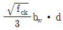
를 초과한다면 수직스터럽의 최대간격은? (단, fck : 콘크리트의 설계기준강도, fy : 보의 폭, d : 보의 유효깊이)- 800mm
- 600mm
- 400mm
- 200mm
(정답률: 42%)
65. 배력철근을 배치하는 이유로서 잘못된 것은?
- 하중을 고르게 분포시켜 균열 폭을 최소화하기 위함이다.
- 주철근의 부착력을 확보하기 위함이다.
- 온도변화에 의한 균열을 방지하기 위함이다.
- 건조수축에 의한 균열을 방지하기 위함이다.
(정답률: 50%)
66. 플랜지의 유효폭이 b이고 복부의 폭이 bw인 복철근 T형 단면보에서 중립축이 복부내에 있고 부(-)의 휨 모멘트를 받아 복부의 아래쪽이 압축을 받게될 때의 응력 계산방법으로 옳은 것은?
- 폭이 b 인 T형보로 계산
- 폭이 bw인 직사각형보로 계산
- 폭이 bw인 T형보로 계산
- 폭이 b 인 직사각형보로 계산
(정답률: 44%)
67. 균형철근량보다 적은 인장철근량을 가진 보가 휨에 의해 파괴되는 경우에 대한 설명으로 옳은 것은?
- 취성파괴를 한다.
- 연성파괴를 한다.
- 사용철근량이 균형철근량보다 적은 경우는 보로서 의미가 없다.
- 중립축이 인장측으로 내려오면서 철근이 먼저 파괴한다.
(정답률: 53%)
68. 압축지배단면으로서 띠철근으로 보강된 철근콘크리트부재에 적용하는 강도감소계수(ø)는?
- 0.80
- 0.75
- 0.70
- 0.65
(정답률: 47%)
69. 길이가 10m인 PSC보에서 포스트텐션 공법으로 설계 할 때 강선에 1,000MPa의 인장력을 가했더니 강선이 2.0mm 풀렸다. 이 때 프리스트레스의 감소량은? (단, Ep=2.0×105MPa 이고 일단정착이다.)
- 20MPa
- 30MPa
- 40MPa
- 50MPa
(정답률: 48%)
70. 강판을 리벳 이음할 때 지그재그(zigzag)형으로 리벳을 배치할 경우 재편의 순폭은 최초의 리벳구멍에 대하여 그 지름을 빼고 다음 것에 대하여는 다음 중 어느 식을 사용하여 빼주는가? (단, g : 리벳선간거리, p : 리벳의 피치)
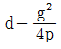
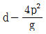
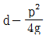
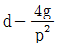
(정답률: 60%)
71. 철근의 겹침이음에서 A급 이음의 조건에 대한 설명으로 옳은 것은?
- 배근된 철근량이 이음부 전체 구간에서 해석결과 요구되는 소요 철근량의 2배 이상이고 소요 겹침이음 길이 내 겹침이음된 철근량이 전체 철근량의 1/3이상인 경우
- 배근된 철근량이 이음부 전체 구간에서 해석결과 요구되는 소요 철근량의 2배 이하이고 소요 겹침이음 길이 내 겹침이음된 철근량이 전체 철근량의 1/2이상인 경우
- 배근된 철근량이 이음부 전체 구간에서 해석결과 요구되는 소요 철근량의 2배 이상이고 소요 겹침이음 길이 내 겹침이음된 철근량이 전체 철근량의 1/2이하인 경우
- 배근된 철근량이 이음부 전체 구간에서 해석결과 요구되는 소요 철근량의 2배 이하이고 소요 겹침이음 길이 내 겹침이음된 철근량이 전체 철근량의 1/3이하인 경우
(정답률: 49%)
72. 강재의 연결부 구조 사항으로 옳지 않은 것은?
- 응력 집중이 없어야 한다.
- 응력의 전달이 확실해야 한다.
- 각 재편에 가급적 편심이 없어야 한다.
- 부재의 변형에 따른 영향을 고려하지 않는다.
(정답률: 62%)
73. 강도설계법의 기본가정에 대한 설명으로 틀린 것은?
- 콘크리트의 응력은 변형률에 비례한다고 본다.
- 콘크리트의 인장 강도는 휨계산에서 무시한다.
- 항복강도 fy 이하에서 철근의 응력은 그 변형률의 Es 배로 본다.
- 압축 측 연단에서 콘크리트의 극한 변형률은 0.003으로 본다.
(정답률: 38%)
74. 단철근 직사각형보에서 fy=300MPa , d=600mm 일 때 중립축 거리 c는? (단, 강도설계법에 의한 균형보임)
- 400mm
- 447mm
- 483mm
- 537mm
(정답률: 65%)
75. fck=28MPa , fy=400MPa 인 경우 표준갈고리를 갖는 인장이형철근의 기본정착길이(lhb)로 옳은 것은? (단, 사용 철근은 D25(공칭지름=25.4mm)이고, 도막되지 않은 철근이고, 사용하는 콘크리트는 보통중량 콘크리트이다.)
- 389mm
- 423mm
- 461mm
- 514mm
(정답률: 57%)
76. 그림과 같이 등분포하중을 받는 단순보에 PS강재를 e=50mm만큼 편심시켜서 직선으로 작용시킬 때, 보 중앙 단면의 하연 응력은 얼마인가? (단, 자중은 무시한다.)
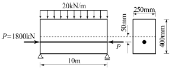
- 69MPa(압축)
- 42MPa(압축)
- 33MPa(압축)
- 6MPa(인장)
(정답률: 39%)
77. 철근콘크리트 보에 스터럽을 배근하는 가장 주된 이유는?
- 보에 작용하는 전단응력에 의한 균열을 막기 위하여
- 콘크리트와 철근의 부착을 잘되게 하기 위하여
- 압축측의 좌굴을 방지하기 위하여
- 인장철근의 응력을 분포시키기 위하여
(정답률: 42%)
78. As′=1,400mm2로 배근된 그림과 같은 복철근보의 탄성처짐이 10mm라 할 때 1년 후 장기처짐을 고려한 총 처짐량은? (단, 1년 후 지속하중 재하에 따른 계수 =1.4이다.)
- 10mm
- 13.25mm
- 16.43mm
- 18.24mm
(정답률: 54%)
79. 아래 그림과 같은 보에서 콘크리트가 부담할 수 있는 공청전단강도(Vc)는? (단, fck=28MPa , fy=400MPa 이고, 보통중량 콘크리트를 사용한 경우)
- 111.1kN
- 134.6kN
- 165.2kN
- 194.3kN
(정답률: 58%)
80. bw=200mm, d=500mm 인 단철근 직사각형보의 균형철근량은? (단, fck=24MPa , fy=400MPa )
- 2,372mm2
- 2,601mm2
- 3,271mm2
- 3,583mm2
(정답률: 60%)
5과목: 토질 및 기초
81. 연약지반 개량공사에서 성토 하중에 의해 압밀된 후 다시 추가 하중을 재하한 직후의 안정검토를 할 경우 삼축압축시험 중 어떠한 시험이 가장 좋은가?
- CD시험
- UU시험
- CU시험
- 급속전단시험
(정답률: 68%)
82. 어떤 점토를 연직으로 4m 굴착하였다. 이 점토의 일축압축강도가 4.8t/m2이고, 단위중량이 1.6t/m3일 때 굴착고에 대한 안전율은 얼마인가?
- 1.2
- 1.5
- 2.0
- 3.0
(정답률: 54%)
83. 다음 중 직접전단시험의 특징이 아닌 것은?
- 배수조건에 대한 완벽한 조절이 가능하다.
- 시료의 경계에 응력이 집중된다.
- 전단면이 미리 정해진다.
- 시험이 간단하고 결과 분석이 빠르다
(정답률: 52%)
84. 다음 설명 중 동상(凍上)에 대한 대책으로 틀린 것은?
- 지하수위와 동결 심도 사이에 모래, 자갈층을 형성하여 모세관 현상으로 인한 물의 상승을 막는다.
- 동결 심도 내의 silt질 흙을 모래나 자갈로 치환한다.
- 동결 심도 내의 흙에 염화칼슘이나 염화나트륨 등을 섞어 빙점을 낮춘다.
- 아이스 렌스(ice lense) 형성이 될 수 있도록 충분한 물을 공급한다.
(정답률: 74%)
85. 연약지반 개량공법 중 프리로딩(preloading) 공법은 다음 중 어떤 경우에 채용하는가?
- 압밀계수가 작고 점성토층의 두께가 큰 경우
- 압밀계수가 크고 점성토층의 두께가 얇은 경우
- 구조물 공사기간에 여유가 없는 경우
- 2차 압밀비가 큰 흙의 경우
(정답률: 58%)
86. 평균 기온에 따른 동결지수가 520℃ days였다. 이 지방의 정수 C=4일 때 동결깊이는? (단, 데라다공식을 이용)
- 22.8cm
- 45.6cm
- 91.2cm
- 130cm
(정답률: 57%)
87. 말뚝기초의 부의 주면마찰력에 대한 설명으로 잘못된 것은?
- 말뚝 선단부에 큰 압력부담을 주게 된다.
- 연약지반에 말뚝을 박고 그 위에 성토를 하였을 때 발생한다.
- 말뚝 주위의 흙이 말뚝을 아래 방향으로 끄는 힘을 말한다.
- 부의 주면마찰력이 일어나면 지지력은 증가한다.
(정답률: 54%)
88. 토질조사 방법 중 Sounding에 대한 설명으로 옳은 것은?
- 표준관입시험(S.P.T)은 정적인 Sounding방법이다.
- Sounding은 Boring이나 시굴보다도 확실하게 지반구성을 알 수 있다.
- Sounding은 원위치 시험으로서 의의가 있으며 예비 조사에 많이 사용된다.
- 동적인 Sounding 방법은 주로 점성토 지반에서 사용된다.
(정답률: 50%)
89. 그림과 같은 지반에서 A점의 주동에 의한 수평방향의 전응력 σh는 얼마인가?
- 8.0 t/m2
- 1.65 t/m2
- 2.67 t/m2
- 4.84 t/m2
(정답률: 34%)
90. 어떤 흙의 건조단위중량 γd=1.65g/cm3이고, 비중은 2.73일 때 이 흙의 간극률은?
- 31.2%
- 35.5%
- 39.4%
- 42.6%
(정답률: 50%)
91. 테르자기(Terzaghi) 압밀이론에서 설정한 가정으로 틀린 것은?
- 흙은 균질하고 완전히 포화되어 있다.
- 흙입자와 물의 압축성은 무시한다.
- 흙속의 물의 이동은 Darcy의 법칙을 따르며 투수계수는 일정하다.
- 흙의 간극비는 유효응력에 비례한다.
(정답률: 45%)
92. 다음 중 현장 타설 콘크리트 말뚝기초 공법이 아닌 것은?
- 프렌키(Franky) 말뚝공법
- 레이몬드(Raymond) 말뚝공법
- 페데스탈(Pedestal) 말뚝공법
- PHC 말뚝공법
(정답률: 52%)
93. 도로포장 두께 설계시 필요한 시험은?
- 표준관입시험
- CBR 시험
- 콘 관입시험
- 현장베인시험
(정답률: 71%)
94. 점토층이 소정의 압밀도에 도달 소요시간이 단면배수일 경우 4년이 걸렸다면 양면배수일 때는 몇 년이 걸리겠는가?
- 1년
- 2년
- 4년
- 16년
(정답률: 53%)
95. 어떤 시료가 조밀한 상태에 있는가, 느슨한 상태에 있는가를 나타내는 데 쓰이며, 주로 모래와 같은 조립토에서 사용되는 것은?
- 상대밀도
- 건조밀도
- 포화밀도
- 수중밀도
(정답률: 62%)
96. 비중 2.65, 간극률 50%인 경우에 Quick Sand 현상을 일으키는 한계동수경사는?
- 0.325
- 0.825
- 0.512
- 1.013
(정답률: 61%)
97. 흙의 다짐효과에 대한 설명으로 옳은 것은?
- 부착성이 양호해지고 흡수성이 증가한다.
- 투수성이 증가한다.
- 압축성이 커진다.
- 밀도가 커진다.
(정답률: 49%)
98. 내부마찰각이 영(零, zero)인 점토질 흙의 일축압축시험시 압축강도가 4kg/cm2이었다면 이 흙의 점착력은?
- 1kg/cm2
- 2kg/cm2
- 3kg/cm2
- 4kg/cm2
(정답률: 65%)
99. 지름 30cm인 재하판으로 측정한 지지력계수 K30=6.6kg/cm3일 때 지름 75cm인 재하판의 지지력계수 K75은?
- 3.0kg/cm3
- 3.5kg/cm3
- 4.0kg/cm3
- 4.5kg/cm3
(정답률: 52%)
100. 말뚝의 정재하시험에서 하중 재하방법이 아닌 것은?
- 사하중을 재하하는 방법
- 반복하중을 재하하는 방법
- 반력말뚝의 주변 마찰력을 이용하는 방법
- Earth Anchor의 인발저항력을 이용하는 방법
(정답률: 36%)
6과목: 상하수도공학
101. 하수관거의 경사와 유속에 대한 설명으로서 틀린 것은?
- 관거경사는 하류로 갈수록 감소시킨다.
- 유속이 너무 크면 관거를 손상시키고 내용년수를 줄어들게 한다.
- 유속을 너무 크게 하면 경사가 급하게 되어 굴착깊이가 점차 깊어져서 시공이 곤란하고 공사비용이 증대 된다.
- 오수관거의 최대유속은 계획시간 최대오수량에 대하여 1.0m/sec로 한다.
(정답률: 68%)
102. 하수관거의 경사와 유속에 대한 설명으로서 틀린 것은?(문제 복원 오류로 101번 문제와 중복 됩니다. 정확한 문제와 보기 내용을 아시는분 께서는 오류 신고를 통하여 내용 작성부탁 드립니다. 정답은 4번입니다.)
- 관거경사는 하류로 갈수록 감소시킨다.
- 유속이 너무 크면 관거를 손상시키고 내용년수를 줄어들게 한다.
- 유속을 너무 크게 하면 경사가 급하게 되어 굴착깊이가 점차 깊어져서 시공이 곤란하고 공사비용이 증대된다.
- 오수관거의 최대유속은 계획시간 최대오수량에 대하여 1.0m/sec로 한다.
(정답률: 74%)
103. 배수지(配水池)에 대한 설명으로 틀린 것은?
- 배수지는 가능한 한 급수지역의 중앙 가까이 설치한다.
- 배수지의 유효수심이 너무 깊으면 구조면이나 시공면에서 내진성과 수밀성에 문제가 생긴다.
- 배수지의 유효용량은 급수구역의 계획1일 최대급수량의 24시간분 이상을 표준으로 한다.
- 배수지는 붕괴의 우려가 있는 비탈의 상부나 하부가까이는 피해야 한다.
(정답률: 47%)
104. 우리나라 상수도시설의 기본계획시 계획(목표)년도는 몇 년을 표준으로 하는가?
- 2∼3년
- 15∼20년
- 30∼40년
- 50년 이상
(정답률: 74%)
1⑤. 하수배제 방식 중 합류식 하수관거에 대한 설명으로서 옳지 않은 것은?
- 일정량 이상이 되면 우천시 오수가 월류한다.
- 기존의 측구를 폐지할 경우 도로폭을 유효하게 이용 할 수 있다.
- 하수처리장에 유입하는 하수의 수질 변동이 비교적 작다.
- 대구경 관거가 되면 좁은 도로에서의 매설에 어려움이 있다.
(정답률: 45%)
106. 어느 지역에 내린 강수가 하수관거에 유입되는 시간이 7min, 하수관거 길이는 540m, 관내 유속이 0.9m/sec 이라면 하수관거 내의 유달시간은?
- 607min
- 600min
- 17min
- 10min
(정답률: 62%)
107. 상수 염소소독의 부산물로서 위해성에 대한 문제가 있는 물질은?
- 클로라민
- 유리잔류염소
- 트리할로메탄(THM)
- 결합잔류염소
(정답률: 70%)
108. 호수의 부영양화 현상을 일으키는 주된 원인물질로 짝지어진 것은?
- 산소, 탄소
- 인, 질소
- 수은, 니켈
- 카드뮴, 납
(정답률: 71%)
109. 하수관거내 침전물에서 방출하는 가스 중 관정부식의 주요 원인이 되는 것은?
- CH4
- H2S
- Cl-
- CO2
(정답률: 57%)
110. 계획오수량을 결정하기 위한 항목에 포함되지 않는 것은?
- 우수량
- 공장폐수량
- 생활오수량
- 지하수량
(정답률: 53%)
111. 하수처리장의 BOD 제거율이 1차 침전지에서 35%, 2차 침전지에서는 85%라면 전체 BOD제거율은?
- 약 70%
- 약 75%
- 약 85%
- 약 90%
(정답률: 46%)
112. 계획급수인구를 추정하기 위한 방법이 아닌 것은?
- 연평균 인구증감수와 증감률에 의한 방법
- 이론곡선식(logistic curve)에 의한 방법
- 베기곡선식에 의한 방법
- 이동평균법에 의한 방법
(정답률: 57%)
113. 취수시설 중 취수문에 대한 시설기준으로서 ( )에 알맞은 것은?
- 0.08m/sec
- 0.8m/sec
- 1.8m/sec
- 2.8m/sec
(정답률: 71%)
114. 상수도의 구성 순서로서 옳은 것은?
- 수원 - 송수 - 정수 - 취수 - 도수 - 배수
- 수원 - 취수 - 송수 - 정수 - 도수 - 배수
- 수원 - 취수 - 도수 - 정수 - 송수 - 배수
- 수원 - 배수 - 취수 - 도수 - 정수 - 송수
(정답률: 67%)
115. 정수장의 처리수량이 35,000m3/day이다. 여과속도를 150m/day,여과지수를 5로 계획하고자 할 때, 여과지 1지의 면적은?
- 46.7m2
- 53.6m2
- 57.7m2
- 65.4m2
(정답률: 29%)
116. 펌프의 캐비테이션(공동현상) 방지 대책으로 옳지 않은 것은?
- 펌프 설치위치를 가능한 한 높게 한다.
- 흡입관의 손실을 가능한 작게 한다.
- 펌프의 회전속도를 낮게 선정한다.
- 한쪽 흡입펌프보다는 양쪽 흡입펌프를 적용한다.
(정답률: 47%)
117. 원수조정지에 대한 설명으로서 옳지 않은 것은?
- 정수시설과 배수시설 사이에 설치한다.
- 용량은 갈수시나 수질사고 등을 고려하여 적절한 용량으로 한다.
- 필요에 따라 펌프 및 그 외의 부속설비를 설치한다.
- 필요에 따라서 오염방지 및 위험방지를 위한 조치를 강구하도록 한다.
(정답률: 51%)
118. 배출수 처리시설 중 농축조 용량의 표준으로서 옳은 것은?
- 계획슬러지량의 3∼6시간분
- 계획슬러지량의 6∼12시간분
- 계획슬러지량의 12∼24시간분
- 계획슬러지량의 24∼48시간분
(정답률: 42%)
119. 활성슬러지법에서 유입하수의 BOD5가 180mg/L, SS가 200mg/L, 폭기조 체류시간 6시간, 폭기조의 MLSS가 2,000mg/L일 때 BOD-SS부하(F/M비)는 얼마인가?
- 0.02kg/kg · MLSS · day
- 0.36kg/kg · MLSS · day
- 0.40kg/kg · MLSS · day
- 0.76kg/kg · MLSS · day
(정답률: 56%)
120. 펌프의 양수량을 조절하는 방식이 아닌 것은?
- 펌프의 회전방향을 변경하는 방법
- 토출밸브의 개폐정도를 변경하는 방법
- 펌프의 회전수를 변화하는 방법
- 펌프의 운전대수를 증감하는 방법
(정답률: 55%)